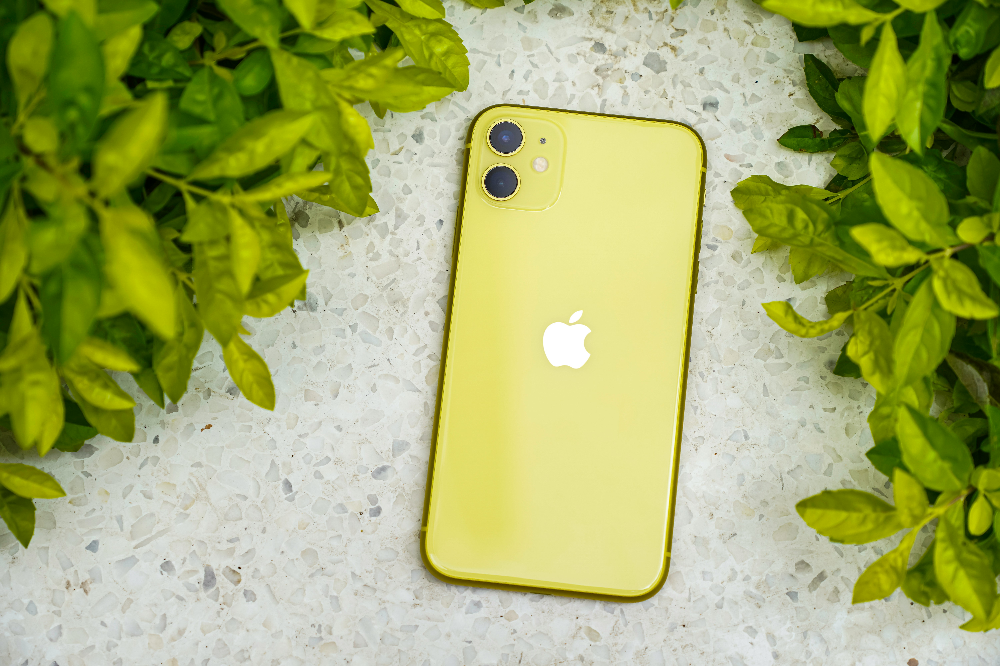

Fashion
Fashion is a popular style, especially in clothing, footwear, lifestyle, accessories, makeup, hairstyle and body.

Steve


Smart Phones
More than 40% users have reported their new phones won't charged when plugged in to lightning cables.
David

Twitter Bring it's Data Server
Microblogging site Twitter has rolled out its latest update for android and ios users with the "data saver" Twitter.
25k
340